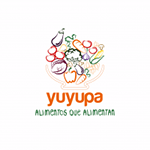
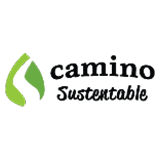
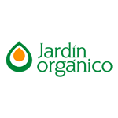

Nuestros principales productores
Trabajamos en conjunto con las mejores agroindustrias, conocé la labor de cada uno.
Yuyupa - alimentos que alimentan
Desde Yuyupa queremos ayudar a crear una cultura alimentaria donde nuestros hijos pidan opciones saludables a la hora de comer, en vez de resistirse a ellas. Consumir frutas y vegetales frescos es uno de los pilares fundamentales para una salud óptima, es por eso que cada día elegimos y seleccionamos los alimentos más saludables para llevarlos a tus manos.

Camino sustentable
Es un sitio para aquellos que buscan generar un cambio positivo en el planeta y en su salud, modificando sus hábitos de consumo y estilo de vida. En nuestra tienda ofrecemos productos elaborados con prácticas éticas y sustentables, y toda la información para que puedas realizar la mejor compra.

Jardín orgánico
Porque tenemos la más amplia oferta de productos orgánicos certificados y nos interesa cuidar tu salud y la del medio ambiente. Además, eligiendo nuestra tienda online estás apoyando la biodiversidad y a los pequeños productores: una responsabilidad social compartida desde el productor al consumidor.

UTT Unión de trabajadores de la tierra
Una organización nacional de familias pequeñas productoras y campesinas que se organizaron, trabajaron y lucharon diariamente por construir otra realidad.
Conocé más ingresando al siguiente enlace: Página oficial UTT